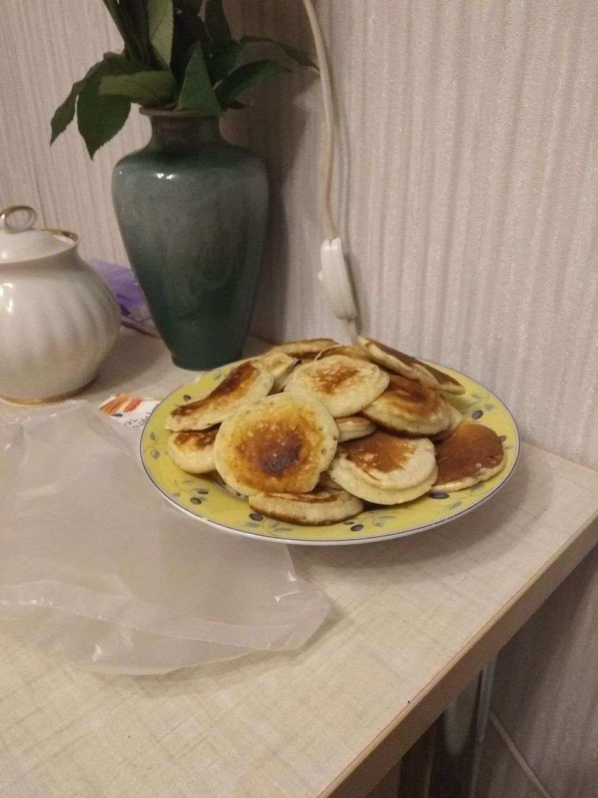

Помимо программирования я увлекаюсь и другими вещами.
Например, рисованием
Не сказать, что я увлекаюсь им всерьез. Мне просто нравится делать всяческие дудлы. Кстати, любовь к рисованию проявляется и в моих конспектах. Моя страсть к красивым текстовыделителям безгранича (даже не смотря на их высокую стоимость, как, к примеру, у Mildliner).

А еще компьютерными играми
Не могу, правда, выделить наиболее любимые мною жанры. Я довольно таки всеядная. Разве что в шутеры играю редко. И в хорроры. В данный момент играю вместе с друзьями в "Valheim". Викинги, драккары, битвы с полубогами. Вот это вот все.
И даже выпечкой
Делала торты с йогуртовой помазкой, имбирное печенье и шоколадные кексы. Почти каждую неделю делаю оладушки.
